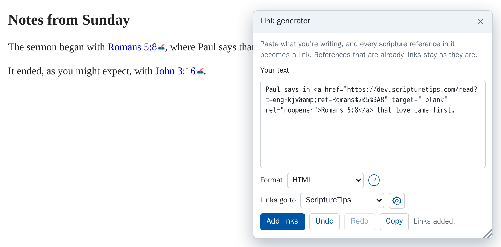

The link generator links the references in something you are writing, for people who don't have the extension: a forum post, a blog article, a wiki page or an email.
The generator opens as a small window on top of the page, so you can write beside what you're reading. Drag it by its title bar to move it, and drag the corner at its bottom right to make it larger or smaller (with the keyboard, focus the corner and use the arrow keys). It remembers where you left it. Close it with the × in its title bar, or press Esc while you're in it. The page's own styles never change how it looks.

On a page where the extension can't open a window, such as the browser's own pages, the button opens the generator in a tab of its own instead, laid out like the settings page, over the same clouds-and-birds artwork.
| Format | A link looks like |
|---|---|
| HTML | <a href="…" target="_blank" rel="noopener">John 3:16</a> |
| BBCode (forums) | [url=…]John 3:16[/url] |
| Wiki markup | [… John 3:16] |
| Markdown | [John 3:16](…) |
The format it starts with is set under Defaults on the settings page (The link generator's format).